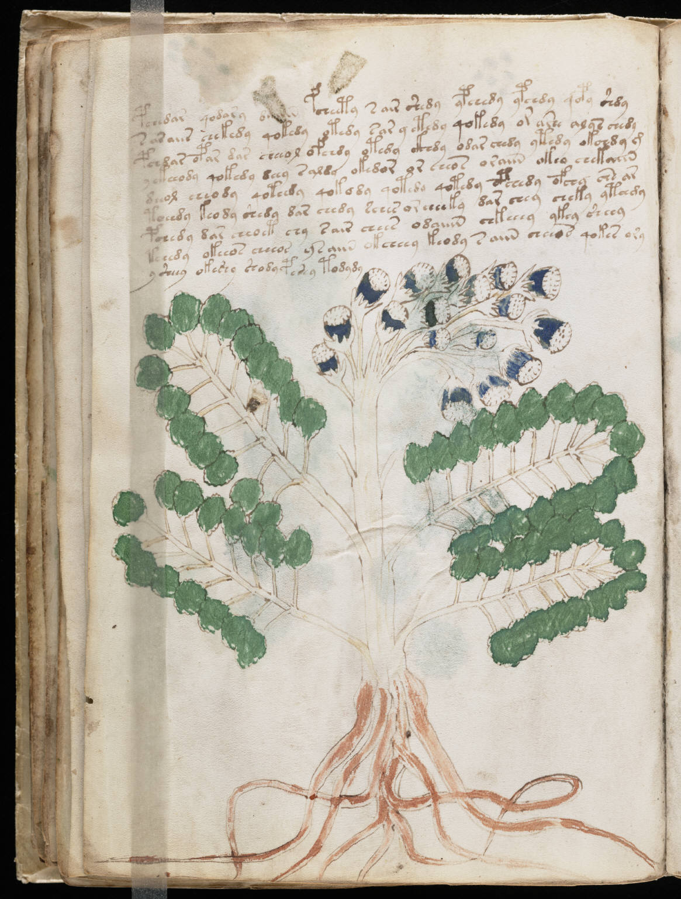

f26v
1pchedar qodary o*iiin pcheety sair shedy ypchedy ypchdy qopy shdy2saraiir chekedy qokedy otedy sar y etedy qokedy or aree alys chedy3pchdar opar dar cheeol ofchdy otedy ckhdy odar chedy ytedy okchdy g4yckheody qokedy deey saldy okedor or eeeos oraiin okeo chekaiin5deeol eeeody qoteedy qokody qotedy qotedy opchedy ofchy chs ar6toeedy keody shedy dar chedy sches or cheeky dar chey cheky ytchdy7pchedy dar cheoet chy sair chees odaiiin chkeeey ykey sheey8teeedy okeeos cheeos ysaiin okcheey keody saiin cheeos qokes ory9ysheey okeshy shodypshey todydy
